Construyo sistemas pensando en el futuro: escalables, sostenibles y centrados en las personas.
Python | Scrum | Docker | Kotlin | DevOps PowerBI | Excel | SQL
Introducción
¡Hola! Soy Josué Florián, un estudiante de 20 años que actualmente cursa el séptimo ciclo de la carrera de Ingeniería Informática en la Universidad Peruana Cayetano Heredia.
- Perteneciente al décimo superior
- Representante de la facultad de Ciencias e Ingeniería en la Asamblea Universitaria
- Miembro activo en la representación y promoción de la carrera de Ingeniería Informática
Sobre mí
A lo largo de mi trayectoria, he cultivado una pasión por el desarrollo de software, una disciplina en la que aspiro a destacar mediante la combinación de aprendizaje continuo y experiencia práctica en proyectos innovadores.
Me considero una persona proactiva, con habilidades para trabajar en equipo y una mentalidad orientada a la solución de problemas. Estoy siempre dispuesto a aprender y enfrentar nuevos desafíos.
Habilidades Técnicas
- Nivel de Inglés - Avanzado
- Desarrollo Backend con Python y .NET, implementación y optimización de APIs RESTful
- Programación en Python, Kotlin, C y C++
- Uso de Docker, Kubernetes y despliegue en la nube (AWS)
- Metodologías ágiles (Scrum) para gestión de proyectos
- Gestión de bases de datos SQL y MongoDB
- Dominio de herramientas de análisis de datos como Power BI y Excel
- Diseño de entornos 3D con Unity y Blender
Experiencia Laboral
Pasantía en Ingeniería Informática
Unidad de Ingeniería Informática – UPCH
Enero 2025 – presente
- Desarrollo de una API de Text-To-Speech (TTS) en español con soporte para acentos regionales, mejorando fluidez y entonación.
- Dockerización del servicio y publicación en Docker Hub, garantizando escalabilidad y portabilidad.
- Aplicación de técnicas de procesamiento de lenguaje natural (NLP) y aprendizaje profundo para optimizar la calidad de la síntesis de voz.
Líder de Equipo de Desarrollo
Innova Lab – UPCH
Febrero 2024 – presente
- Lideré el desarrollo de una experiencia de realidad virtual para Meta Quest 2, usando Unity y XR Interaction Toolkit.
- Implementé funciones desde repositorios de GitHub, optimizando el código y la experiencia de usuario.
- Diseñé modelos 3D y entornos virtuales en Unity, priorizando rendimiento y usabilidad.
- Coordiné el proyecto con metodologías ágiles (Scrum), facilitando sprints efectivos y cumplimiento de objetivos estratégicos.
Practicante en Ingeniería Informática
Unidad de Ingeniería Informática – UPCH
Enero – Mayo 2024
- Desarrollé funcionalidades en C# para simulaciones interactivas, enfocándome en arquitectura de software eficiente.
- Me familiaricé con entornos como Unity y Blender, fortaleciendo habilidades en lógica de programación y modelado 3D.
Objetivos Profesionales
Convertirme en arquitecto de software, desarrollando soluciones escalables y de impacto social. Mientras avanzo hacia ese rol, busco crecer como desarrollador, aprendiendo de distintos entornos tecnológicos y contribuyendo con código de calidad, visión sistémica y trabajo en equipo.
Proyecto 1: Sistema de Gestión
Descripción: Un sistema de gestión para pequeñas empresas.
Colaboradores:
-
Josué Florián
-
 María López
María López
-
Carlos García
Certificados
-
Scrum Fundamentals Certified
-
Career Essentials in Software Development

-
Desarrolla tus habilidades de productividad con IA generativa
-
DevOps Professional Certificate

-
Docker Foundations Professional Certificate
-
TRL Technology readiness levels

-
Explore a career as a web developer
Proyectos
Proyecto 3: Sitio Web Personal
Descripción: Mi sitio web personal para mostrar mi portafolio.
Ver másProyecto 3: Sitio Web Personal
Descripción: Mi sitio web personal para mostrar mi portafolio.
Ver másProyecto 3: Sitio Web Personal
Descripción: Mi sitio web personal para mostrar mi portafolio.
Ver másProyecto 3: Sitio Web Personal
Descripción: Mi sitio web personal para mostrar mi portafolio.
Ver másTestimonios
"Trabajar con Florián fue una experiencia maravillosa. Su profesionalismo y atención al detalle son incomparables."
- Juan Pérez, CEO de Tech Solutions"Su capacidad para resolver problemas complejos con soluciones simples es sorprendente. Lo recomiendo ampliamente."
- María López, Gerente de Proyectos"Siempre dispuesto a ayudar, Florián es un excelente colaborador. Estoy muy contento de haber trabajado con él."
- Carlos García, Consultor de TI